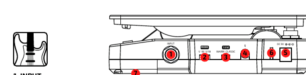
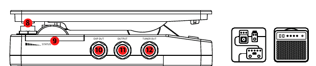
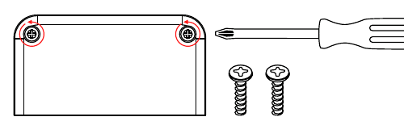
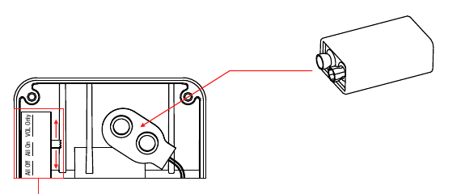

Hotone Soul Press II
Welcome
Volume / Expression / Wah pedal
www.hotoneaudio.com
Panel


1. INPUT
1/4" mono audio jack, for connecting guitar.
2. MODE
- V — Volume mode, for use as volume pedal.
- W — Wah mode, for use as a wah pedal.
- V/W — Switchable volume/wah mode, combining volume and wah pedals in one.
3. TONE
For selecting wah filter frequency range.
4. Q
For adjusting wah filter frequency width.
5. DC IN
Plug in 9V DC adapter (center negative).
6. LED
| MODE | LED Color |
|---|---|
| V | Green |
| W | Blue |
| V/W | Green/Blue |
7. Battery Compartment
For holding a 9V battery.
8. Footswitch
Switch between on/off status or active volume/wah in V/W mode (Soul Press II cannot be bypassed in V/W mode).
9. STATUS
A set of LEDs showing the current pedal position. You can set the LEDs on demand by the 3-way switch hidden in the battery compartment.
10. EXP OUT
1/4" TRS jack, for connecting to another device with EXP control IN jack. EXP out works in any mode. When used as an expression pedal, Soul Press II can work without a power supply.
11. OUTPUT
1/4" mono audio jack, for connecting to one other gear.
12. TUNER OUT
1/4" mono audio jack, for connecting tuner. Perfect for Hotone Skyline Tuner.
Battery Installation & STATUS Setting


- Remove two screws from the battery compartment with a phillips screwdriver.
- Remove the battery compartment cover.
- Install a 9V battery.
- Use the 3-way switch to set STATUS LEDs.
There are three options available:
- All Off: Switches the STATUS LEDs off.
- All On: The STATUS LEDs work in all modes.
- VOL Only: The STATUS LEDs work only in VOL mode.
Specifications
- Pot Resistance (EXP out): 10kΩ
- Input Impedance: 1MΩ
- Output Impedance: 100Ω
- Wah Range Selector:
- WARM — 290Hz to 1.4kHz
- CLASSIC — 360Hz to 1.8kHz
- Current Consumption: Max 30mA
- Dimensions: 81mm (W) x 162mm (D) x 51mm (H)
- Weight: 500g
* In the interest of product improvement, the specifications and/or the content of products (including but not limited to appearances, packaging design, manual content, accessories, size, parameters and display screen), are subject to change without prior notice. Please check with local supplier for exact offers. Specifications and features (including but not limited to appearances, colors and size) may vary by model owing to environmental factors, and all images are illustrative.